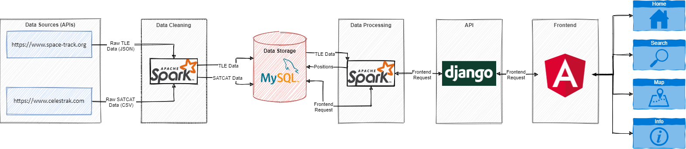

Satellite Tracker is an application that allows the user to visualize (plotted on a map) the real-time locations and historical as well as predicted orbital paths of satellites orbiting around the earth. It consists of a frontend for the visualization, a backend for processing the raw data and calculating the satellites' positions in real-time, and a database for the storage of the raw and the processed data. Users are able to search for a particular satellite using any attribute like Name, NORAD (North American Aerospace Defense) ID, Country/Owner, Launch Date, etc. Additionally, the user is also able to select a location on the map enabling him/her to view all the satellites that are currently visible from that location (potentially having a line of sight being above the horizon). The motivation behind this project was to build a solution that allows the user to easily explore and visualize hundreds of satellites in orbit above us, which we daily use in one way or another, be it for navigation or watching our favorite television show.
Data Problems Addressed
- Data Storage/Transformation
- Data Modeling
- Data Cleaning
- Data Integration
- Data Retrieval
- Data Aggregation/Exploration
- Parallel Data Processing
Unique features
- Unique topic and data
- Utilizes parallel processing in spark using RDD and Map function
- UI is intuitive and provides interactive visualization
- Calculations are being done in real-time
- Provides extensive search capability column-wise and blind keyword search across all columns
- Interesting ideas like the line of sight which provides a way to visualize how many objects are currently in the sky
Architecture

Active Satellites
Unique NORAD IDs in SATCAT Data
Unique NORAD IDs in TLE Data
Data Sets
The following two datasets were used in this project
TLE
Two Line Element
TLE is a standard data format containing the list of orbital elements of objects in orbit around any celestial body at a given time. Examples are mean motion, eccentricity, inclination, mean anomaly, semi-major axis, etc.
SATCAT
Satellite Catalog
SATCAT gives additional information or metadata regarding the satellite, including the name, type, operational status (e.g., if the satellite is operational, nonoperational, is a backup, etc.), launch date, launch site, its orbital period, i.e., how long does it take to complete one orbit around the earth, etc.

Contact
This project was made by Asjad Asif Jah